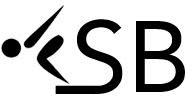

Saving your work ...
Saving your work first ...
Home
Make Divelist
Learn Dives
Springboard
Dive Group
All Groups
Forward
Back
Inward
Reverse
Twist
Performed within
1 Month
Experience level
I know it
I'm learning it
I don't know it
Find dive
Arrange by
Predicted score (high to low)
Untitled Divelist
Save
Export
New List
Load...
Select dives from the database on the left, or
autogenerate a divelist based on
Highest predicted score »
Most practiced dives »
Most recently performed dives »
View as:
List
Chart